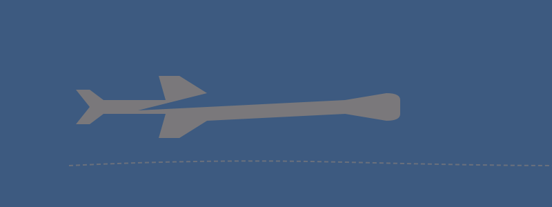

Day 14 — Departure
Wednesday, June 3, 2026
Breakfast at NH, train/taxi to FCO, fly home.

PLACES & MAP LINKS — tap any place to open in Google Maps
🏨 Breakfast — 📍 NH Collection Roma Palazzo Cinquecento
Check-out before transit to FCO.
✈️ Departure — 📍 Rome Fiumicino Airport (FCO)
Leonardo Express from Termini = 32 min. Or taxi (~€55 flat rate).
CONTACTS
NH concierge: +39 06 4929 3000
NOTES
- Leonardo Express train from Termini is fastest, easiest to FCO.
- Allow at least 3 hours before international flight — accessibility processing adds time.
- Hotel can store bags if late flight and want to walk Rome one last time.